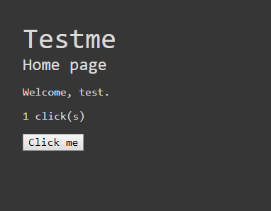

Section 4 - Aperçu de l'application
On va maintenant expérimenter sur une application Django.
Elle est disponible dans le dossier examples/web-app.
C'est une application très pauvre fonctionnellement, on peut juste s'enregistrer/se connecter et incrémenter son compteur de clicks avec un bouton.

Le but premier de cette application est d'utiliser pytest.
Pour démarrer l'application, il faut avoir chargé le virtualenv, aller dans le dossier examples/web-app puis:
python manage.py migrate
python manage.py runserver 0.0.0.0:8000
Faites le tour des fonctionnalités de l'application, puis exécutez les tests:
pytest
Vous devriez avoir un résultat de ce type, avec des tests qui plantent:
(venv) PS C:\Users\...\web-app> pytest
=============================================== test session starts ================================================
platform win32 -- Python 3.7.1, pytest-4.3.1, py-1.8.0, pluggy-0.9.0 -- c:\users\...\python.exe
cachedir: .pytest_cache
Django settings: testme_project.settings (from ini file)
rootdir: C:\Users\...\web-app, inifile: pytest.ini
plugins: pythonpath-0.7.3, django-3.4.8, cov-2.6.1
collected 10 items
run-last-failure: rerun previous 5 failures first
tests/test_api.py::test_api_addme FAILED [ 10%]
tests/test_api.py::test_api_base64me FAILED [ 20%]
tests/test_profile.py::test_profile_reset_clicks FAILED [ 30%]
tests/test_profile.py::test_profile_clicks_to_stream FAILED [ 40%]
tests/e2e/test_e2e.py::test_home
DevTools listening on ws://127.0.0.1:18187/devtools/browser/fa679536-3af4-4b06-beb9-ef09bfb9c0db
FAILED [ 50%]
tests/test_api.py::test_api_clickme PASSED [ 60%]
tests/test_profile.py::test_profile_default PASSED [ 70%]
tests/test_profile.py::test_profile_zero_clicks PASSED [ 80%]
tests/test_profile.py::test_profile_add_click PASSED [ 90%]
tests/e2e/test_e2e.py::test_login
DevTools listening on ws://127.0.0.1:18214/devtools/browser/bde370e3-4913-497b-a571-c38be8cfa536
PASSED [100%]
...
Il est possible que vos tests ne soient pas exécutés dans le même ordre, mais c'est pas bien grave.
A la suite de ces lignes de résumé, vous devez avoir un petit tas d'erreurs avec du contexte, plantant à chaque fois sur un assert False.
Prenez le temps de regarder la définition de ces tests pour bien comprendre comment tout fonctionne.